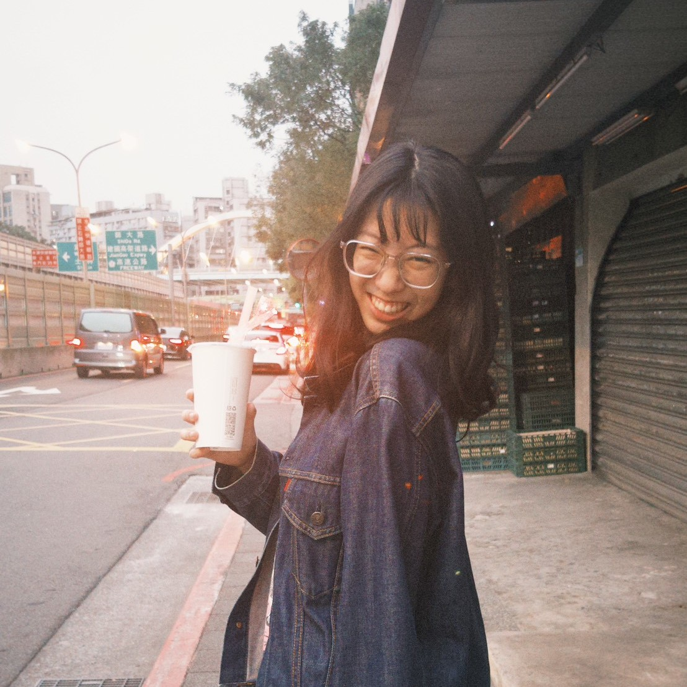
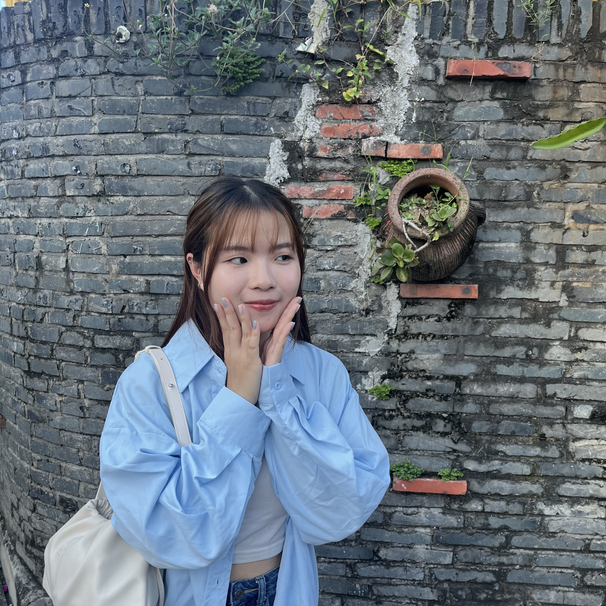
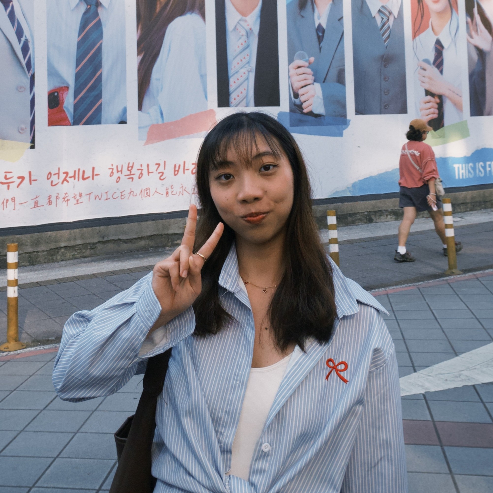
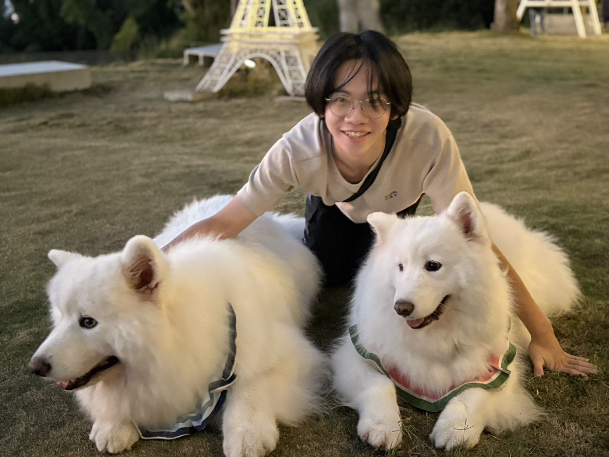
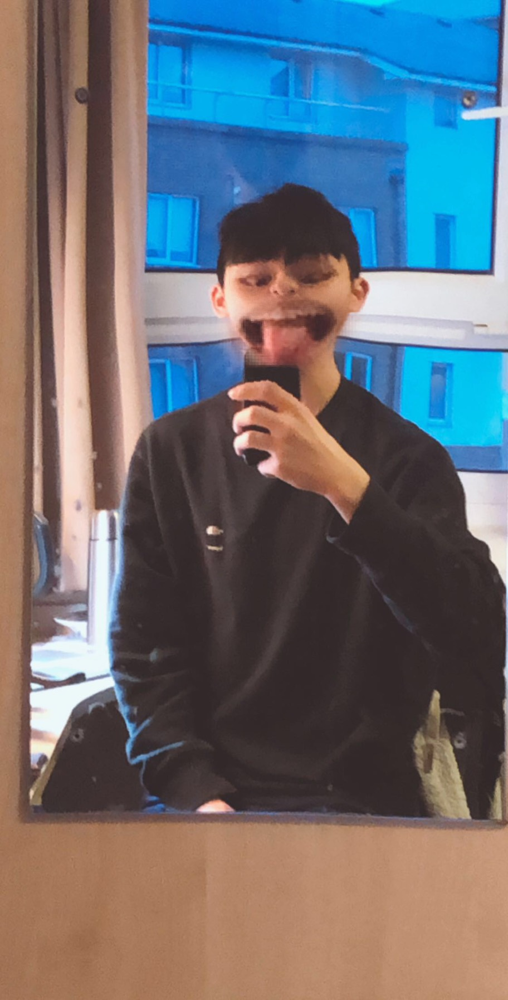
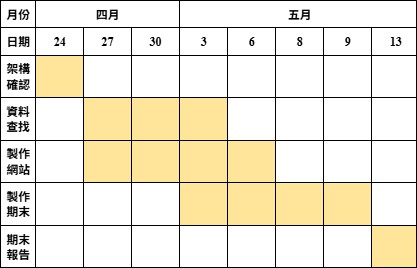

負責展覽整體的設計規劃與文物選件資料彙整。
負責視覺設計與多媒體製作，提升展覽的視覺吸引力。

負責內容策劃與資料收集，確保展覽資訊豐富且準確。
負責展覽設計的細節安排與文物選件相關資料整理。

負責展覽空間設計規劃以及文物選件資料的蒐集。

負責網站設計與前端開發，確保使用者體驗流暢。

負責後端開發與資料庫管理，確保網站運行穩定且安全。

負責策展理念以及主題之編寫。
負責視覺設計與多媒體製作，提升展覽的視覺吸引力。

參考文獻安城寿子（2012）。日本服飾近代化的挑戰與挫折：以齋藤佳三為中心。
洪郁如（Hung, Y. R.）（2021，12月14日）。大和民族的衣裳：近現代東亞場域中和服論述、資本與性別政治。Taiwan Lit，2（2）。
Milhaupt, T. S.（2021）。和服：一部形塑與認同的日本現代史（黃可秀譯）。遠足文化。
Milhaupt, T. S.（2021，12月3日）。《和服：一部形塑與認同的日本現代史》：當我們回顧山本耀司的作品，或許能更了解和服是怎樣邁入另一個領域。關鍵評論網。
南青山不動產株式會社（2026）。日本的傳統文化「和服」。歷史與形成過程。WA MARE。https://wa-mare.jp/column/。
國立故宮博物院南部院區（2026）。展覽回顧：KIMONO－18～20世紀日本服飾特展。https://south.npm.gov.tw/Exhibition/Recollection。
唐聆真（Tang, L. J.）（2018）。男童戰爭紋樣和服的視覺傳達與文化意涵（1920－1940）［碩士論文，亞際文化研究國際碩士學位學程］。臺灣聯合大學系統。
高橋健自（2016）。圖說日本服飾史（李建華譯）。清華大學出版社。
王慧瑜（2010）。日治時期臺北地區日本人的物質生活（1895－1937）［碩士論文，國立臺灣師範大學］。國立臺灣圖書館。
Watanabe, A.（渡辺明日香）（2014）。日本のファッションにみる美國の影響：洋装化，ジャパン・ファッションの影響，ストリートファッションの現在。共立女子短期大學生活科學科紀要，57，47－58。